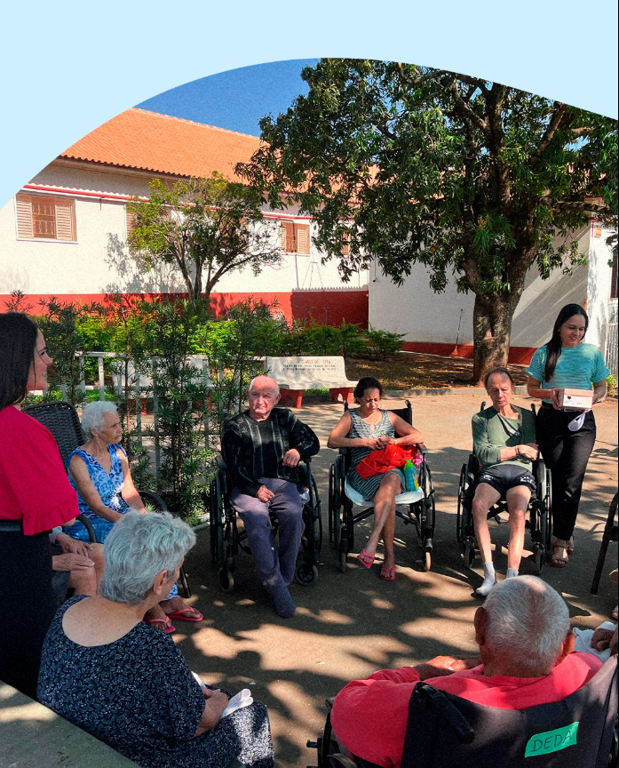
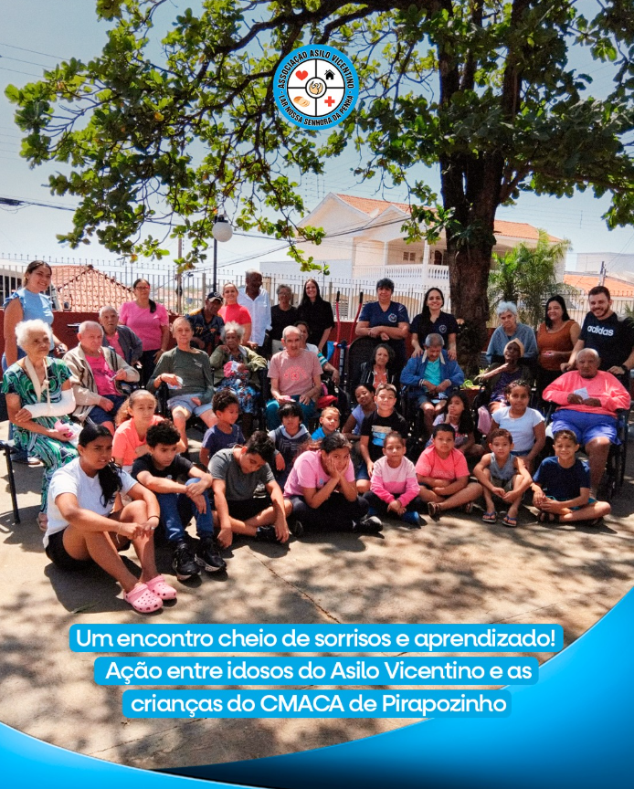
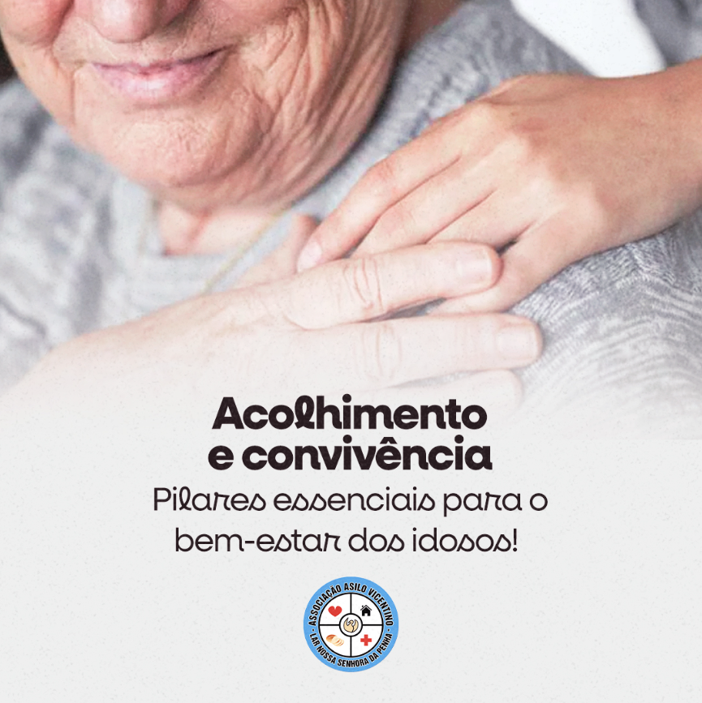
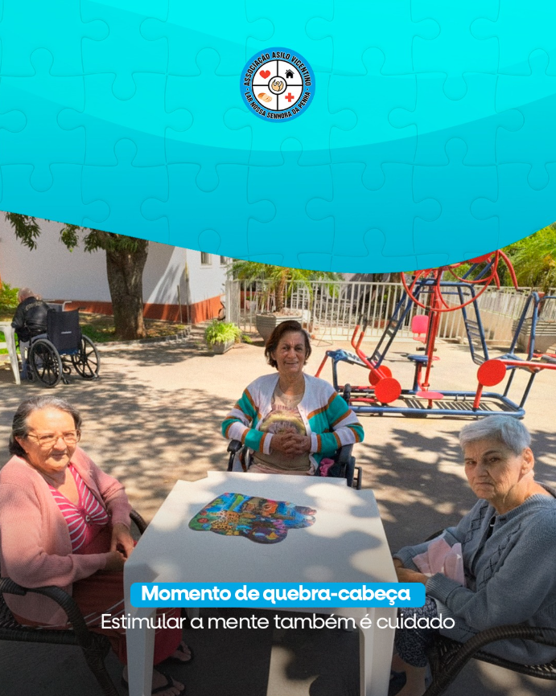
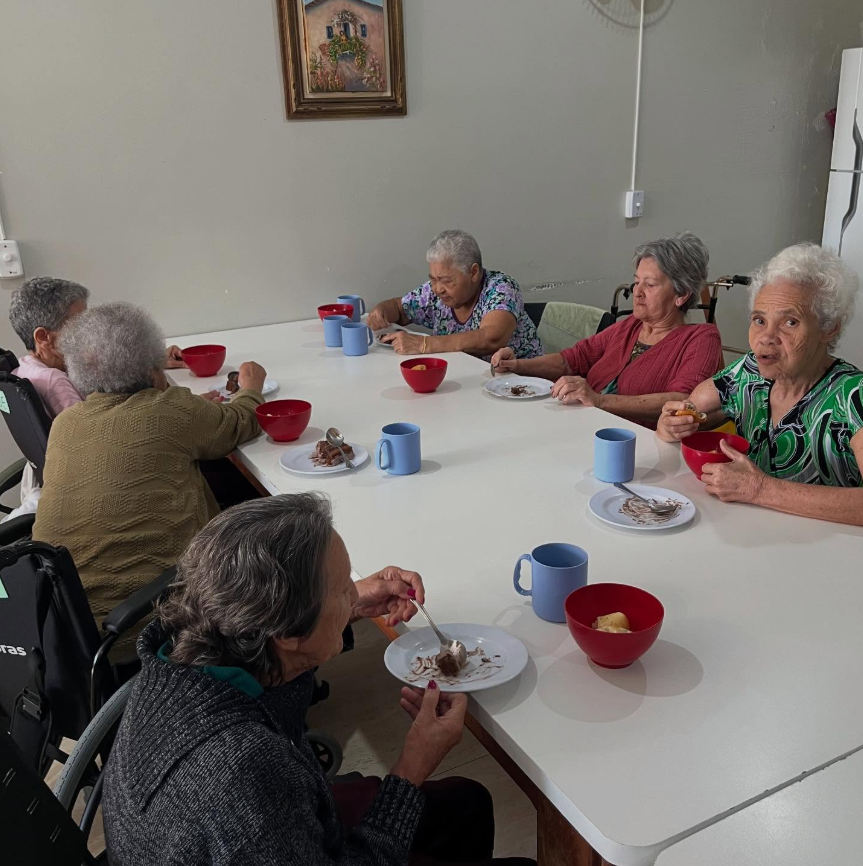
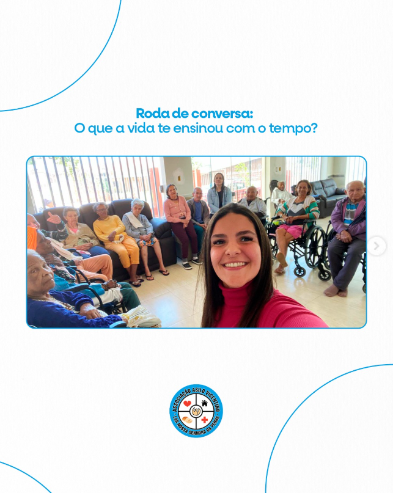

Refeições, itens de cozinha e cuidados nutricionais.
Excelência em Cuidado
Dignidade e Cuidado para Cada Residente.
Unimos a precisão técnica da medicina moderna com a ternura de um lar dedicado, criando um ambiente de serenidade inigualável.

Cuidado Humanizado
Certificado de excelência em gestão de cuidados geriátricos 2026.

60+
Anos de dedicação
auto_awesome
Inovação Constante

A Nossa Jornada
Tradição e Inovação: O Legado do SGAV
Fundado em 29/10/1965 sobre pilares de respeito e humanidade, o SGAV Care evoluiu de um pequeno refúgio para uma instituição de referência tecnológica sem nunca perder a essência do acolhimento familiar.
Nossa história é escrita diariamente através do equilíbrio entre protocolos médicos rigorosos e o calor de um sorriso amigo, garantindo que a longevidade seja celebrada com plenitude.
100+
Vidas Cuidadas
10+
Especialistas
Espaços de Vida
Um refúgio desenhado para o bem-estar

Convivência
Atividades Diárias
Momentos de estímulo cognitivo, participação e convivência acompanhada pela equipe.
Rotina com carinho
Um dia tranquilo, no ritmo de cada morador
Pequenos momentos se repetem todos os dias: cuidado, conversa, refeição, descanso e presença da equipe.

07h30
Começo tranquilo
A manhã começa com higiene, café e acompanhamento próximo da equipe.
Transparência
Documentos públicos
Baixe os PDFs publicados pela coordenação, organizados por ano.
search
Carregando documentos...
Comunicados
Notícias
Carregando notícias...
format_quote
Reconhecimento
Vozes de Gratidão
starstarstarstarstar
"No Asilo Vicentino, sentimos que nossa família ganhou mais uma casa. O cuidado diário e o carinho da equipe nos trazem tranquilidade de verdade."
Helena M. Cavalcanti
Filha de Residente
starstarstarstarstar
"O que mais nos toca no Asilo Vicentino é a atenção com cada pessoa. Cada detalhe, da alimentação às atividades, é pensado com respeito e humanidade."

Ricardo S. Almeida
Familiar de Residente
Ajude-nos a Manter a qualidade.
Seu apoio permite que continuemos investindo em novas tecnologias de cuidado e infraestrutura, garantindo um futuro digno para nossos residentes.
Meta mensal de doação
R$ 850 de R$ 2.000
Faltam R$ 1.150 para bater a meta.
Destino das doações
Atividades, eventos e momentos de convivência.
Apoio para melhorias, ampliação e construção.
Sua ajuda mantém alimentação, higiene e medicação em dia.
Investimos em equipamentos e estrutura para mais proteção.
Atividades e eventos que valorizam convivência e bem-estar.
Registrar intenção de doação
Informe seus dados para a secretaria acompanhar e confirmar a contribuição com segurança.
Valores sugeridos
favorite
Escolha um valor para ver o impacto
Cada contribuição ajuda diretamente na rotina dos residentes.
Intenção de doação registrada!
Ela aparecerá para a secretaria como "Em análise". A confirmação deve ser feita após conferência do PIX/extrato.
security
PIX oficial em configuração
O QR code e a chave PIX devem ser os dados oficiais da instituição. Assim que forem informados, eles entram aqui para o doador concluir o pagamento com segurança.
O registro público não confirma pagamento automaticamente. A secretaria valida a entrada e marca a doação como concluída.